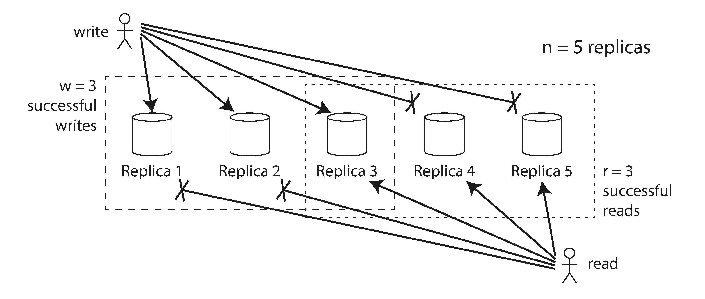

در databases Dynamo-style، پارامترهای n, w و r معمولاً قابل تنظیم هستند. A common choice این است که n را یک عدد فرد (معمولاً 3 یا 5) قرار دهید و w = r = (n + 1) / 2 (به سمت بالا گرد شده) را تنظیم کنید. با این حال، شما میتوانید اعداد را آنطور که صلاح میدانید تغییر دهید. به عنوان مثال، یک workload با writes کم و reads زیاد ممکن است از تنظیم w = n و r = 1 سود ببرد. این باعث میشود که reads سریعتر شوند، اما این downside را دارد که تنها یک node fail شده باعث میشود که تمام writes database fail شوند.
ممکن است بیش از n nodes در cluster وجود داشته باشد، اما هر value داده شده فقط در n nodes ذخیره میشود. این به dataset اجازه میدهد تا partitioned شود، که از datasets پشتیبانی میکند که بزرگتر از آن چیزی هستند که شما میتوانید در یک node جا دهید.
ما در فصل 6 به partitioning باز خواهیم گشت.
The quorum condition, w + r > n، به سیستم اجازه میدهد تا nodes unavailable را به شرح زیر تحمل کند:
شکل 5-11. If w + r > n، حداقل یکی از r replicas که شما از آنها میخوانید، باید most recent successful write را دیده باشد.
180 | Chapter 5: Replication